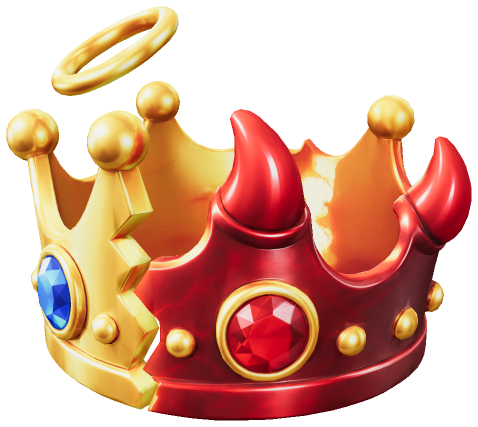
Glorious Studio · Game studio in South KoreaGlorious Studio · 대한민국 게임 스튜디오
Every choice tilts you toward angel or devil.모든 선택은 천사 아니면 악마 쪽으로 기운다.
We are making Halo & Horns, an action RPG on Roblox. Help other players or play the villain, and the result shows as a halo or horns over your own avatar.
로블록스 액션 RPG Halo & Horns(선악 키우기)를 만들고 있습니다. 다른 플레이어를 돕든 악당이 되든, 그 결과가 내 아바타 위에 후광이나 뿔로 나타납니다.
Try the scale저울 눌러 보기
Real quest choices게임 속 실제 선택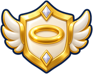
Halo 0 Horns 0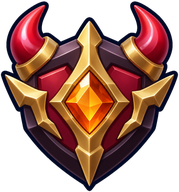
These choices come from the game's side quests. In the game, each one adds a point to your side.게임 속 서브 퀘스트의 실제 선택지입니다. 게임에서는 고를 때마다 내 쪽에 1점이 쌓입니다.
Halo
Angel choices: give things back, help new players, and chase down anyone with Wanted stars.
천사 쪽 선택: 물건을 돌려주고, 새 플레이어를 돕고, 현상수배 별이 붙은 사람을 쫓습니다.
Horns
Devil choices: finders keepers, play the villain, and carry a bounty on your head.
악마 쪽 선택: 주운 물건을 챙기고, 악당이 되고, 머리에 현상금이 붙습니다.
Two teams, the Knights of Light and the Horn Legion, share one scale. Players on either team can lean either way.두 팀(빛의 기사단, 뿔 군단)이 저울 하나를 함께 씁니다. 어느 팀이든 어느 쪽으로나 기울 수 있습니다.
The game게임
Halo & Horns
You join the Knights of Light (Halo) or the Horn Legion (Horns), pick a Warrior, Mage or Archer, hunt cute monsters, and collect loot to grow stronger. Combat is simple: one tap is one attack. An optional quest unlocks auto-combat, which only ever hits monsters. Fights against other players happen only in marked PvP zones, and new players are protected.
빛의 기사단(Halo)이나 뿔 군단(Horns)에 들어가 전사·마법사·궁수 중 하나를 고르고, 귀여운 몬스터를 사냥하고, 전리품을 모아 강해집니다. 전투는 쉽습니다. 한 번 누르면 한 번 공격합니다. 선택 퀘스트를 깨면 자동 전투가 열리는데, 자동 전투는 몬스터만 때립니다. 플레이어끼리의 싸움은 표시된 PvP 구역에서만 일어나고, 새로 온 플레이어는 보호받습니다.
The first ten minutes처음 10분
- A short 3D intro (skippable): the broken crown in the sky splits into shards.짧은 3D 인트로(건너뛰기 가능): 하늘의 깨진 왕관이 조각으로 흩어집니다.
- Pick a faction and a class. A guide from your side gives the first mission.진영과 직업을 고릅니다. 내 진영의 안내자가 첫 임무를 줍니다.
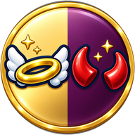
- Get your first weapon at the Forge.대장간에서 첫 무기를 받습니다.
- Hunt slimes in the Squishy Meadow.말랑 초원에서 슬라임을 사냥합니다.
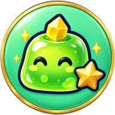
- The first choice, about 3 minutes in: a slime drops a kid's lunchbox. Give it back, or take one bite?시작 3분쯤 첫 선택: 슬라임이 아이의 도시락을 떨어뜨렸습니다. 돌려줄까, 한 입 먹을까?
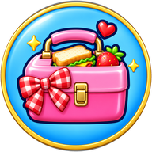
After that: loot and enhancement scrolls, harder zones (Goblin Woods at Lv10, Skeleton Ruins at Lv25), Halloween minibosses, and a crown war between the two sides every 10 minutes that turns the sky the winner's color.
그다음: 전리품과 강화 주문서, 더 어려운 구역(고블린 숲 Lv10, 해골 폐허 Lv25), 할로윈 미니 보스, 그리고 10분마다 열리는 두 진영의 왕관 전쟁(이긴 쪽 색으로 하늘이 바뀜).
Our one design rule우리의 단 하나의 디자인 규칙
Every action tilts toward angel or devil.모든 행동은 천사 아니면 악마 쪽으로 기운다.
A new system goes into the game only if it follows this rule. Devil acts earn Wanted stars and a bounty, and angel-side players can hunt you down. Revenge and justice systems grow from the same choices, and everything you do shows over your own Roblox avatar.
새 시스템은 이 규칙을 따를 때만 게임에 들어갑니다. 악마 쪽 행동은 현상수배 별과 현상금을 쌓고, 천사 쪽 플레이어가 나를 쫓아옵니다. 복수와 정의 시스템도 같은 선택에서 나오고, 내가 한 모든 일이 내 로블록스 아바타 위에 보입니다.
Built만듦
- Skippable first-time 3D intro처음 한 번 나오는 3D 인트로(건너뛰기 가능)
- Two factions, three classes each진영 2개, 진영마다 직업 3개
- Guided first mission and the Forge안내를 따라가는 첫 임무와 대장간
- Manual combat, plus an auto-combat toggle that hits monsters only수동 전투, 그리고 켜고 끌 수 있는 자동 전투(몬스터만 공격)
- First skill at Lv5, with MP and a cooldownLv5 첫 스킬(MP·재사용 대기시간)
- Monster drops and enhancement scrolls (10/30/70%) that never break gear몬스터 드롭과 강화 주문서(10/30/70%), 장비 파괴 없음
- Blacksmith and potion shop대장간과 물약 상점
- Wanted stars, bounties, revenge and other angel/devil consequences현상수배 별·현상금·복수 등 선악의 결과
- Crown war every 10 minutes10분마다 왕관 전쟁
- Halloween season with Pumpkin King and Ghost King minibosses호박왕·유령왕 미니 보스가 나오는 할로윈 시즌
- 12 monster kinds and a baby slime pet몬스터 12종과 아기 슬라임 펫
- Daily and story quests, weekly rankings일일·스토리 퀘스트, 주간 랭킹
- Safe saving with a session lock and retries중복 접속 잠금과 재시도가 있는 안전한 저장
- One HUD layout for PC and phonePC와 폰에 같은 HUD 배치
In progress만드는 중
- Game passes: 2x XP, 2x Gold, VIP, halo and horn cosmetics게임 패스: 경험치 2배, 골드 2배, VIP, 후광·뿔 꾸미기
- More skills at Lv15 and Lv25Lv15·Lv25 추가 스킬
- Invite a friend (no rewards for inviting)친구 초대(초대 보상 없음)
- Zones rebuilt to match the concept art: hills, water, waterfalls콘셉트 그림대로 구역 다시 만들기: 언덕·물·폭포
- Full art redraw with Adobe Firefly, and 3D world props with TripoAdobe Firefly로 모든 그림 새로 그리기, Tripo로 3D 소품 만들기
Planned계획
- 7-day attendance board; your day count never resets7일 출석판, 모은 날 수는 0으로 돌아가지 않음 before beta베타 전
- Roblox badges로블록스 배지 before beta베타 전
- Private servers비공개 서버 before beta베타 전
- Artisan Guild: a third side with crafting and gathering, no PvP장인 길드: 제작·채집을 하는 세 번째 진영, PvP 없음
- Skeleton King boss해골왕 보스
- Player trading market플레이어 거래 시장 after full launch정식 출시 뒤
Fair play, by design공정하게, 처음부터
- Stats are never for sale.
- No gacha or paid random items.
- No countdown timers, fake discounts or login streaks that reset to zero.
- No rewards for how many friends you invite.
- Equipment never breaks.
- Cosmetics change color only, so money cannot make you look higher-ranked.
- Modest, kid-friendly character art and short, simple English.
- Nicknames go through Roblox's text filter. Analytics hold no personal data.
- 능력치는 절대 팔지 않습니다.
- 뽑기나 유료 랜덤 아이템이 없습니다.
- 카운트다운, 가짜 할인, 0으로 돌아가는 연속 출석이 없습니다.
- 친구를 몇 명 초대했는지로 보상을 주지 않습니다.
- 장비는 부서지지 않습니다.
- 꾸미기는 색만 바뀌어서, 돈으로 더 높은 계급처럼 보일 수 없습니다.
- 캐릭터 그림은 단정하고 아이에게 맞게 그리고, 게임 글은 짧고 쉬운 영어로 씁니다.
- 닉네임은 로블록스 글 필터를 거칩니다. 분석 기록에는 개인정보가 없습니다.
The game is not public yet, so nothing has been sold.게임이 아직 공개 전이라 판매한 것은 없습니다.
Gallery사진
From our play tests시험 플레이에서
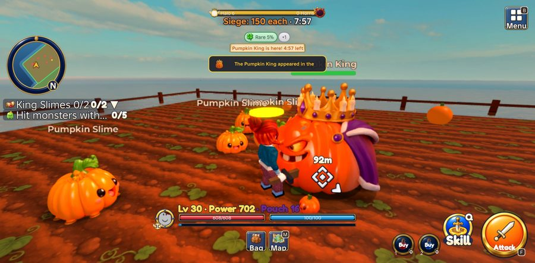
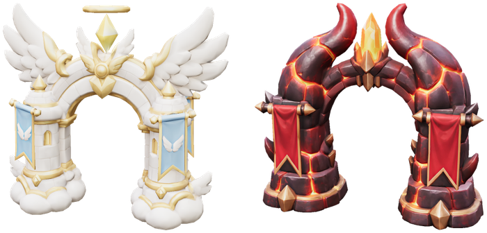
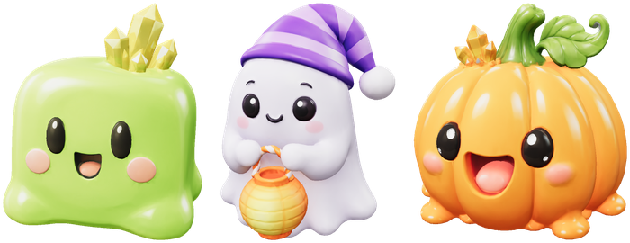
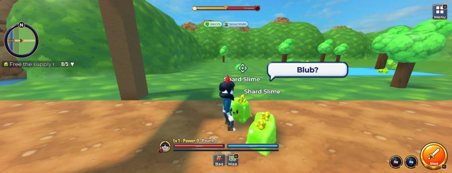
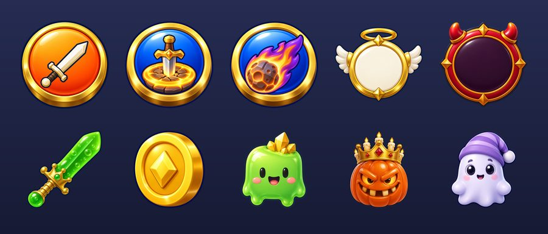
Screens from play tests in Roblox Studio before the beta. Work in progress.베타 전 로블록스 스튜디오 시험 플레이 화면입니다. 아직 만드는 중입니다.
How we build만드는 방법
One director, nine Claude Code sessions디렉터 1명, Claude Code 세션 9개
Glorious Studio is one person. The founder makes the big calls: design, art picks, money and the schedule. A team of Claude Code agent sessions writes the code, makes the art and sound, and tests the game. Each session has one job, and no session approves its own work.
Glorious Studio에서 일하는 사람은 한 명입니다. 창업자가 큰 결정(디자인, 그림 선택, 돈, 일정)을 하고, Claude Code 에이전트 세션 팀이 코드를 쓰고 그림과 소리를 만들고 게임을 시험합니다. 세션마다 맡은 일이 하나씩 있고, 어떤 세션도 자기 일을 스스로 승인하지 못합니다.
| Role역할 | What it does하는 일 |
|---|---|
| Director (human)디렉터 (사람) | Design, art picks, money, schedule디자인, 그림 선택, 돈, 일정 |
| Reviewer / lead검수 / 리드 | Hands out work, reviews every commit and art sheet, keeps the design docs일을 나누고, 모든 커밋과 그림 시트를 검토하고, 설계 문서를 관리 |
| Gameplay dev 1게임성 개발 1 | Client code and the main Roblox Studio place클라이언트 코드와 메인 로블록스 스튜디오 |
| Gameplay dev 2, 3게임성 개발 2·3 | Server code, each in its own git worktree서버 코드(각자 따로 된 git 작업 폴더에서) |
| Image gen 1이미지 생성 1 | World art, terrain, 3D world props세계 그림, 지형, 3D 소품 |
| Image gen 2이미지 생성 2 | UI parts, icons, charactersUI 부품, 아이콘, 캐릭터 |
| Image dev이미지 개발 | Uploads art and wires it into the UI and HUD그림 업로드, UI·HUD 연결 |
| Sound소리 | Sound effects효과음 |
| Film / edit촬영 편집 | Devlog videos개발 일지 영상 |
How we keep it honest정직하게 만드는 습관
- Offline tests run the game's Luau code without Studio. Most of them break the code on purpose to prove the test catches it.
- "Fixed" means photos from a real play test in the main Studio, on both PC and phone.
- A reviewer session, or the founder, re-checks every piece of work from its evidence files.
- Every image is looked at before upload, in batches of 10 or fewer.
- 오프라인 시험이 스튜디오 없이 게임의 Luau 코드를 돌립니다. 대부분은 코드를 일부러 망가뜨려서 시험이 그걸 잡아내는지까지 확인합니다.
- '고쳤다'는 메인 스튜디오에서 PC와 폰 둘 다 실제로 플레이한 사진이 있다는 뜻입니다.
- 모든 작업은 검수 세션이나 창업자가 증거 파일로 다시 확인합니다.
- 모든 그림은 업로드 전에 눈으로 보고, 10장 이하씩 올립니다.
Counted from our repository on 8 Oct 20262026년 10월 8일 저장소에서 센 숫자
- Commits since the first one on 2 Oct 20262026년 10월 2일 첫 커밋부터 쌓인 커밋
- 1,000+
- Lines of Luau game codeLuau 게임 코드 줄 수
- 65,000+
- Luau source filesLuau 소스 파일
- 110
- Offline test suites (54 with mutation checks)오프라인 시험 묶음 (54개는 코드를 일부러 망가뜨려 보는 검사 포함)
- 66
- Approved 2D images (405 from Adobe Firefly)승인된 2D 그림 (405개는 Adobe Firefly)
- 500+
- 3D models generated with TripoTripo로 만든 3D 모델
- 190+
- Sound effects made만든 효과음
- 57
- Monster kinds몬스터 종류
- 12
- Claude Code sessionsClaude Code 세션
- 9
- Days until the beta베타까지 남은 날
- 23
Roadmap로드맵
From beta to Steam베타에서 스팀까지
- Feature freeze기능 마감Then a week of testing and bug fixes only.그 뒤 일주일은 시험과 버그 수정만 합니다.
- Beta on Roblox로블록스 베타The first public release, on Halloween weekend.할로윈 주말에 처음 공개합니다.
- Late Nov 2026 (target)2026년 11월 말 (목표)Artisan update장인 업데이트A third side with crafting and gathering. If it slips, it ships with the full launch.제작·채집을 하는 세 번째 진영. 늦어지면 정식 출시 때 함께 나옵니다.
- Full launch정식 출시At the start of winter break, with the Skeleton King boss and more 3D weapons.겨울방학이 시작될 무렵, 해골왕 보스와 더 많은 3D 무기를 더합니다.
- 2027Halo & Horns updatesHalo & Horns 업데이트Starting with a player trading market.플레이어 거래 시장부터 시작합니다.
- Next그다음A PC game on Steam스팀 PC 게임Our second game, made the same way.같은 방식으로 만드는 두 번째 게임.
About소개
Glorious Studio
Glorious Studio is a one-person game studio in South Korea. The founder has no programming or art background, just a long love of games. After spending a lot of time and money on other people's games, they decided to make one.
Glorious Studio는 대한민국의 1인 게임 스튜디오입니다. 창업자는 코딩이나 그림을 배운 적이 없고, 게임을 오래 좋아해 왔습니다. 남이 만든 게임에 시간과 돈을 많이 쓰다가, 직접 만들기로 했습니다.
The founder directs, and Claude Code sessions build, draw and test. Halo & Horns on Roblox is the first game. Next, we want to make a PC game for Steam.
창업자가 방향을 정하고, Claude Code 세션들이 만들고 그리고 시험합니다. 첫 게임은 로블록스의 Halo & Horns이고, 다음에는 스팀용 PC 게임을 만들고 싶습니다.
- Studio스튜디오
- Glorious Studio
- Country나라
- South Korea대한민국
- Founded설립
- December 20252025년 12월
- Business reg. no.사업자등록번호
- 677-45-01149
- First game첫 게임
- Halo & Horns (Roblox)Halo & Horns (선악 키우기, 로블록스)
- Team팀
- 1 founder + 9 Claude Code sessions창업자 1명 + Claude Code 세션 9개
- Email메일
- jian@glorious.ai.kr
Contact연락
Write to us메일 보내기
Questions about Halo & Horns, partnerships or press.Halo & Horns, 협업, 취재 관련 문의를 받습니다.